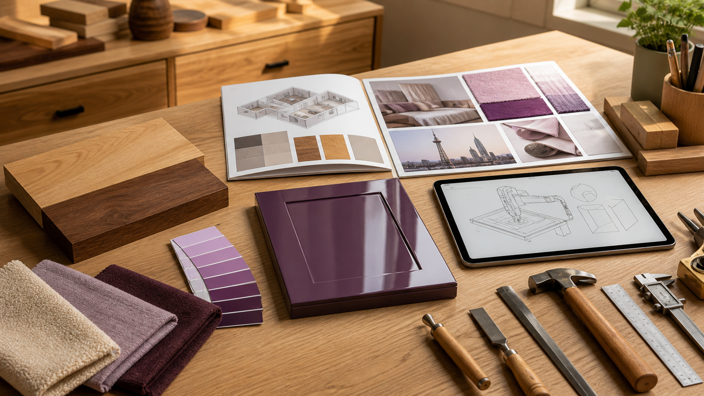

2026.08.17 가구·인테리어·목공 일일 트렌드

오늘의 흐름은 단순한 유행색보다 '표면을 어떻게 기억하게 만들 것인가'에 가깝습니다. 라일락과 플럼은 따뜻한 원목 옆에서 부드러운 대비를 만들고, 래커와 바이오 기반 표면재는 광택·촉감·지속가능성을 동시에 요구합니다. 전시 일정도 남미 가구, 상하이 홈 텍스타일, IWF 자동화로 이어지며 공방이 색채, 소재, 생산성을 함께 봐야 한다는 압박을 줍니다.
1. 라일락은 봄 장식색이 아니라 가을 실내 팔레트로 이동하고 있습니다
Better Homes & Gardens는 2026년 8월 16일 라일락이 가을 홈 데코의 의외의 색으로 부상하고 있다고 보도했습니다. 기사에서 디자이너 Carin Elle Meade는 라일락을 실내에 온기, 차분함, 우아함을 더하는 색으로 설명하며, 향후 업홀스터리, 침구, 수납장, 러그, 벽지, 페인트까지 확장될 수 있다고 봤습니다.
왜 중요한가. 목간의 원목가구는 브라운과 그린 계열만 고집하면 계절 제안이 좁아집니다. 오크, 월넛, 애쉬 샘플 옆에 라일락·플럼·크림 패브릭을 놓으면 젊은 고객에게 '부드럽지만 유치하지 않은' 색 조합을 보여줄 수 있습니다. 다만 라일락은 넓은 면적보다 쿠션, 문짝 내부, 서랍 안감, 작은 포인트 도장부터 테스트하는 편이 안전합니다.
2. 래커 마감은 강한 색을 과시하는 방식보다 무광 자연 소재와의 균형으로 돌아옵니다
Real Simple은 2026년 8월 15일 래커 마감이 다시 주목받고 있다고 보도했습니다. 기사에서 디자이너들은 고광택 표면이 빛을 반사하고 색의 깊이를 키우지만, 자연석, 무광 타일, 패브릭, 차분한 색과 같이 배치해야 생활 공간 안에서 과하지 않게 작동한다고 설명했습니다.
왜 중요한가. 원목 공방이 고광택 래커를 전면 도입할 필요는 없습니다. 그러나 수납장 문짝 한 장, 콘솔 상판, 서랍 앞판처럼 작은 부위에 적용하면 원목의 무광 결, 황동 손잡이, 석재 상판과 대비되는 고급 옵션을 만들 수 있습니다. 핵심은 광택이 흠집과 면 불량을 확대한다는 점입니다. 샌딩, 하도, 먼지 관리, 외주 도장 기준을 먼저 정하지 않으면 오히려 품질 리스크가 커집니다.
3. Movelsul 개막은 남미 가구 시장이 디자인과 수출을 동시에 밀고 있다는 신호입니다
Movelsul Brasil은 2026년 8월 17일부터 20일까지 브라질 Bento Goncalves에서 열립니다. 공식 사이트는 이 행사를 라틴아메리카 주요 가구 박람회로 소개하며, 지역의 'Furniture Terroir', 협업, 혁신, 절약형 사고, 국내외 바이어 연결을 강조합니다. 2026년 행사는 디자인, 소비자 행동, 시장 콘텐츠와 수출 기업 참여도 함께 내세우고 있습니다.
왜 중요한가. 국내 공방이 해외 전시에 바로 나가지 않더라도 남미 가구권의 메시지는 참고할 만합니다. '지역성'을 단순 전통 이미지가 아니라 재료, 생활방식, 생산 네트워크, 가격 효율성으로 설명합니다. 목간도 한옥·원목·맞춤 제작을 감성 문구로만 쓰지 말고 수종 선택, 지역 제작 공정, 유지보수, 납기, 가격 구조까지 하나의 지역 기반 가치로 묶어야 합니다.
- Movelsul Brasil official site · 2026.08.17-20 행사, 2026.08.17 확인
4. Intertextile Shanghai는 패브릭을 가구 기획의 후순위가 아니라 소싱 축으로 올립니다
Intertextile Shanghai Home Textiles Autumn Edition은 2026년 8월 18일부터 20일까지 상하이 National Exhibition and Convention Center에서 열립니다. 공식 사이트는 이 행사를 아시아의 주요 홈 텍스타일 이벤트로 설명하며, 업계 관계자가 제품을 소싱하고 디자인 영감을 얻는 플랫폼이라고 밝힙니다. 2025년에는 약 900개 전시사와 3만5000명 이상의 방문자가 참여했습니다.
왜 중요한가. 원목가구의 품질은 목재만으로 끝나지 않습니다. 의자 방석, 벤치 쿠션, 수납장 내부 패브릭, 러그와 커튼까지 같이 제안해야 실제 공간 구매로 이어집니다. 목간은 목재 샘플 보드와 별도로 패브릭 견본장을 만들고, 내마모성, 세탁성, 색 빠짐, 교체 주기를 견적 옵션에 넣어야 합니다.
- Intertextile Shanghai Home Textiles Autumn Edition official site · 2026.08.18-20 행사, 2026.08.17 확인
5. IWF와 바이오 기반 표면재는 작은 공방에도 '소재+생산성' 질문을 던집니다
FANUC America는 IWF 2026 참가 페이지에서 2026년 8월 25일부터 28일까지 열리는 International Woodworking Fair가 건축 목공, 캐비닛, 바닥재, 가구 제조, 엔지니어드 제품, 문·창호, 기계, 공구, 금속, 플라스틱 등 목공 전반의 솔루션을 다룬다고 안내했습니다. 한편 Formica는 2026년 6월 16일 FENIX NTX를 발표하며 최대 90% 바이오 기반 원료, 초무광·소프트터치 성능, 첫 우드그레인 디자인을 가구·캐비닛·건축 목공·문짝·벽패널 용도로 제시했습니다.
왜 중요한가. 공방의 경쟁력은 '손으로 잘 만든다'만으로 부족합니다. 반복 가공은 지그, 외주 CNC, 템플릿, 표준 하드웨어로 줄이고, 고객이 직접 만지는 표면은 원목·무늬목·고성능 보드·바이오 기반 소재를 비교 설명해야 합니다. 친환경 소재도 인증, 내구성, 가공성, 수리 가능성을 확인하지 않으면 마케팅 문구에 그칩니다.
- FANUC America, IWF 2026 event page · 2026.08.25-28 행사, 2026.08.17 확인
- Formica Corporation, Formica Group Introduces a New Era of Sustainable Surfacing with FENIX NTX · 2026.06.16
오늘의 실무 인사이트
- 색채 제안은 작은 교체 부품부터 시작한다. 라일락과 플럼은 쿠션, 손잡이 주변, 서랍 내부, 이동식 소품처럼 교체 가능한 부위에 먼저 적용해야 실패 비용이 작습니다.
- 광택 마감은 공정표 없이는 팔지 않는다. 래커나 고광택 도장은 면 처리와 먼지 관리가 품질을 결정합니다. 샘플 문짝을 만들어 샌딩 단계, 하도, 건조, 외주 여부를 견적서에 명시해야 합니다.
- 전시 정보는 제품 캘린더로 바꾼다. Movelsul, Intertextile, IWF에서 보이는 색·패브릭·자동화 흐름을 9월 샘플 보드, 10월 공모전 콘셉트, 겨울 맞춤 수납 제안으로 나눠 실행해야 합니다.
- 친환경 소재는 성능표와 같이 비교한다. 바이오 기반, 재활용, 저탄소라는 말보다 스크래치, 열, 습기, 수리, 폐기 기준을 원목과 나란히 보여줘야 고객이 실제로 선택합니다.